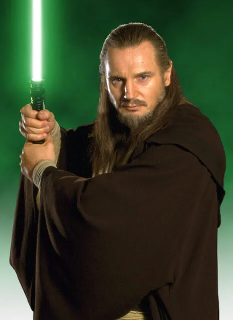
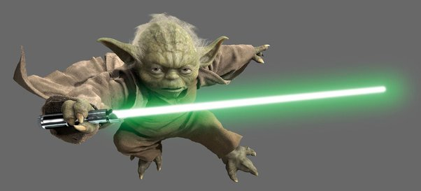
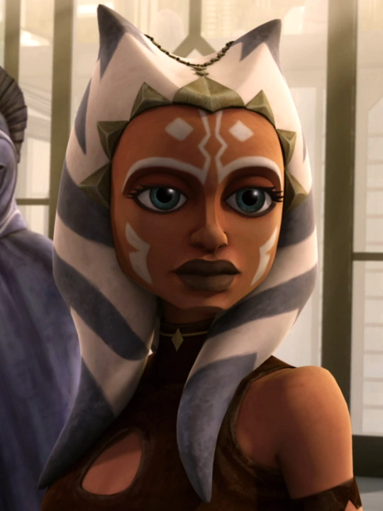
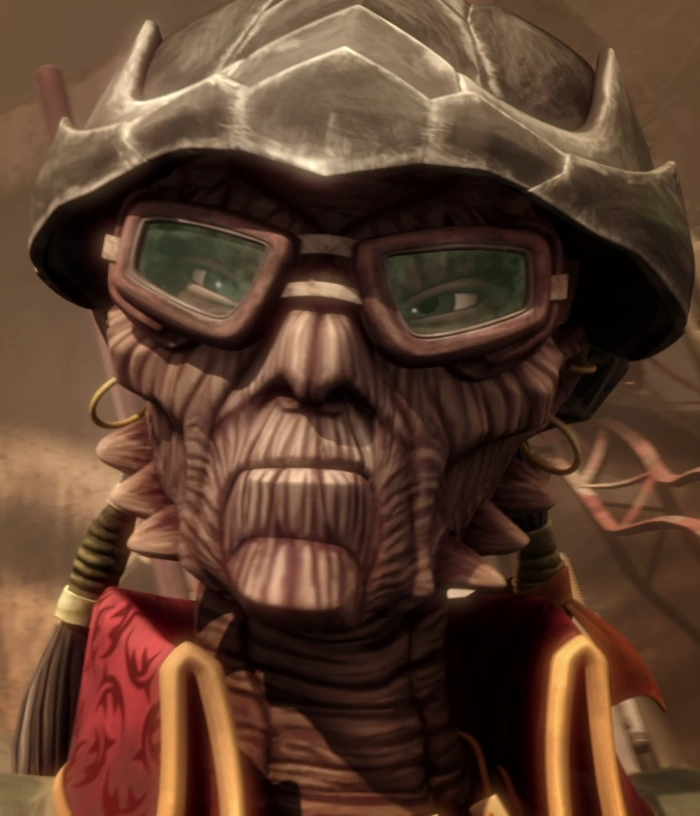
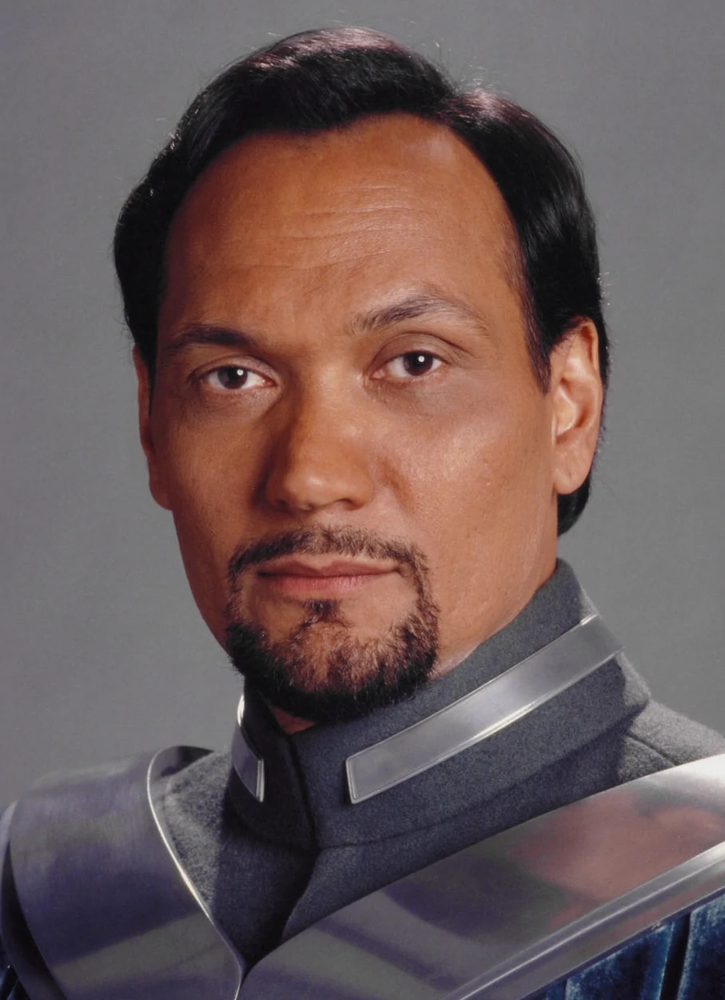

Estudios
- Aprendiz Iniciado Jedi (Youngling) con el Maestro Yoda
- Aprendiz Padawan con el maestro Qui-Gon Jinn
- Caballero Jedi
Competencias
- Dominio excelente de la forma 3 de combate (Soresu)
- Negociador experto
- Gran ingenio estratégico en combate
Experiencia Laboral
- Proteger a la Duquesa Satine Kryze de Mandalore
- Proteger a la Reina de Naboo durante una invasión ilegal del planeta por parte de la Federación de Comercio
- Investigación y descubrimiento de la creación secreta de un Ejército de Clones en Kamino
- General del Gran Ejército de la República
Idiomas
- Mando'a
- Wookie
Datos Interesantes
- Siendo un aprendiz Padawan maté a un lord sith, quien anteriormente asesinó al Maestro Qui-Gon Jinn
- Investigación y descubrimiento de un complot separatista que desembocaría en las Guerras Clon
Referencias
Qui-Gon Jinn
Maestro
Yoda
Maestro
Anakin Skywalker
Padawan, Amigo
Ahsoka Tano
Padawan de Skywalker, Amiga
Hondo Onaka
Pirata
Bail Organa
Amigo